Perguntas Frequentes
Esta secção compila alguns problemas comuns que podem surgir, e as soluções identificadas. Caso identifiquem outros problemas/soluções que mereçam a pena ser adicionados ou actualizados, podem contribuir utilizando os mecanismos identificados nesta secção.
Localização
Question
Porque é que a representação HTML da OGC API - DGT está em inglês?
A OGC API da DGT suporta português e inglês, de acordo com a preferência do cliente. A pygeoapi segue um mecanismo Standard de HTTP, que procura satisfazer o header Accept-Language do pedido enviado pelo cliente. No caso de aceder á API através de um browser verifique se a língua que tem pre-definida é o inglês, o que explicaria obter uma resposta em inglês.
Tip
A pygeoapi permite forçar a resposta uma determinada língua, através do parâmetro lang. Por exemplo para obter uma resposta em português, independentemente da língua do cliente:
Filtrar Coleções
Question
A página de colecções da OGC API da DGT tem dezenas de entradas. Como posso filtra-las para encontrar uma entrada específica, por exemplo caop?
A OGC API da DGT é uma API, desenhada para ser consumida por uma aplicação cliente (como o QGIS). A representação HTML dos endpoints é apenas um exemplo, que permite uma visualização mais simpática que um documento em JSON, mas não apresenta funcionalidades como pesquisas.
Tip
Ao criar uma ligação no QGIS com o endpoint da OGC API - Features, é possível filtrar as colecções no servidor usando uma string (por exemplo caop).
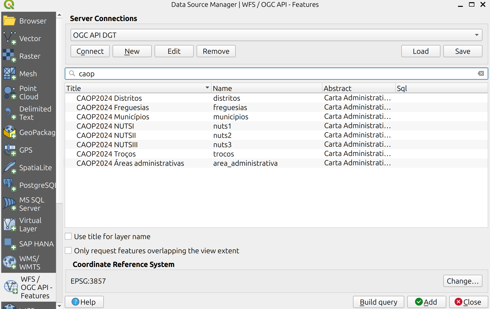
Paginação
Question
Sei que esta colecção tem mais de um milhão de registos, mas quando acedo aos dados através do endpoint de OGC API - Features só me aparecem 100. Porquê esta diferença?
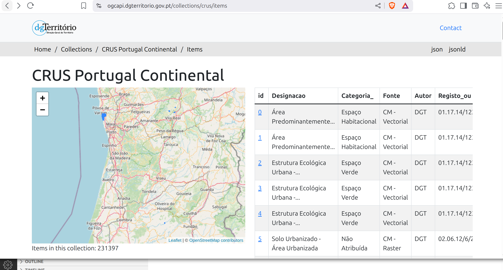
A OGC API usa um mecanismo de paging para evitar sobrecarregar o servidor e o cliente com muitos items. Por defeito, este serviço está configurado para servir 100 items de cada vez.
Tip
O número de items devolvidos pela OGC API - Features pode ser forçado através do parâmetro limit, até chegar ao limite configurado para o servidor. Por exemplo:
- https://ogcapi.dgterritorio.gov.pt/collections/crus/items?limit=250
- https://ogcapi.dgterritorio.gov.pt/collections/crus/items?limit=10
No caso de o limit ultrapassar o limite do servidor, não será apresentado nenhum erro, mas o número máximo de items permitidos será devolvido na resposta.
Mais detalhes sobre o parâmetro limit, incluindo uma explicação de como obter links para navegar através das colecções usando paging, podem ser consultados nesta secção do Standard.
Velocidade de Acesso
Question
A resposta do serviço OGC API - Features é muito lenta no meu cliente (por exemplo QGIS). Porquê?
As aplicações clientes podem estar a fazer outras operações quando estão a aceder aos items, como por exemplo fazer o rendering da visualização ou criar um cache. Estas operações podem afectar o tempo que o utilizador espera por uma resposta.
Tip
Para avaliar o tempo real que a OGC API da DGT demora a responder, recomenda-se um processo mais directo de download, como por exemplo usando curl ou wget na linha de comandos.
wget 'https://ogcapi.dgterritorio.gov.pt/collections/crus/items?f=json&limit=5000' --2025-04-25 21:35:21-- https://ogcapi.dgterritorio.gov.pt/collections/crus/items?f=json&limit=5000
Resolving ogcapi.dgterritorio.gov.pt (ogcapi.dgterritorio.gov.pt)... 193.137.95.231 Connecting to ogcapi.dgterritorio.gov.pt (ogcapi.dgterritorio.gov.pt)|193.137.95.231|:443... connected.
HTTP request sent, awaiting response... 200 OK
Length: 60693514 (58M) [application/json]
Saving to: ‘items?f=json&limit=5000’
items?f=json&limit= 100%[===================>] 57,88M 4,72MB/s in 12s
2025-04-25 21:35:36 (4,64 MB/s) - ‘items?f=json&limit=5000’ saved [60693514/60693514]
Para melhorar o acesso a dados vetoriais, leia também a pergunta seguinte.
Acesso Eficiente a Dados Vetoriais
Question
Qual é a melhor forma de aceder a coleções vetoriais no QGIS?
OGC API - Features está desenhada para permitir pesquisas (e.g.: bounding box, palavra chave, etc), devolvendo apenas a parte dos dados que nos interessa. Se estamos a pedir a totalidade dos dados para efeitos de visualização, a recomendação é usar OGC API - Tiles, que foram desenhadas especificamente para esse propósito e proporcionam uma melhor experiência de navegação (e.g.: zoomin, panning).
Tip
As tiles vetoriais retém o acesso aos atributos, permitindo interrogar partes do mapa com a função ’identify’.
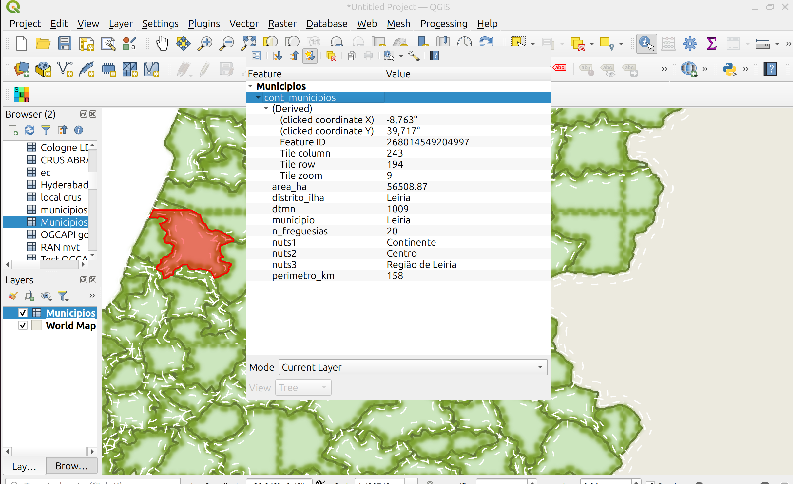
No caso de realmente não estarmos interessados na totalidade dos dados, mas apenas uma parte, a recomendação é estabelecer esse filtro antes de aceder á colecção.
Example
No exemplo abaixo, mostra-se um pedido da coleção "SRUP - Reserva Ecológica Nacional - Áreas", filtrada pela área de interesse.
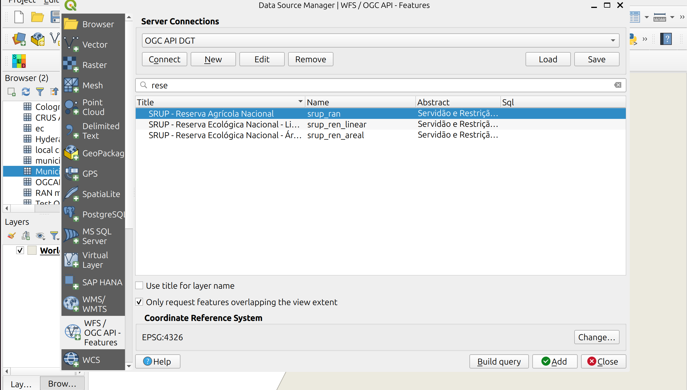
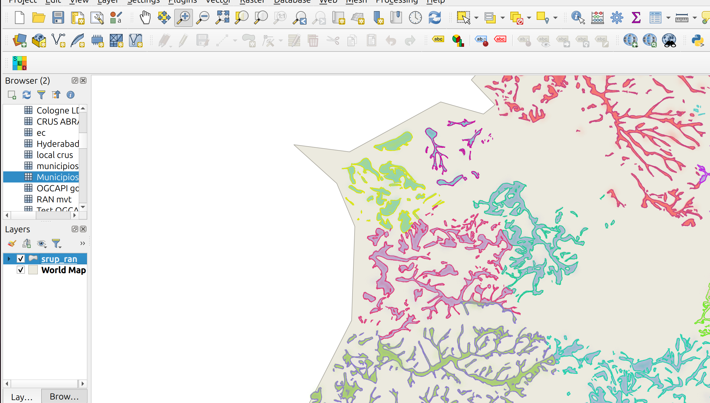
Abstract
O diagrama abaixo descreve o processo de avaliação do acesso a colecções vetoriais.
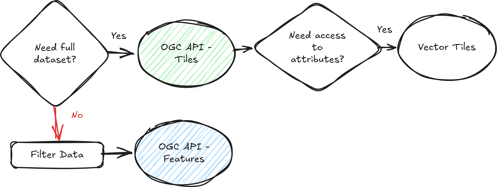
Salvo nos caso de colecções que já sabemos de antemão serem muito pequenas, a recomendação é nunca carregar colecções do tipo OGC API - Features sem filtros. Para explorar os dados, e visualizar-los, deve usar-se OGC API - Tiles.
Visualização de Coleções de Mapas
Question
Esta coleção do tipo OGC API - Maps não parece apresentar dados. Porquê?
Algumas coleções do tipo OGC API - Maps apresentam dados muito detalhados (por exemplo pixel de 25cm), que só são visíveis numa escala grande. Se fôr este o caso, experimente a fazer zoom in no cliente, até começarem a aparecer dados.
Example
No exemplo abaixo, mostra-se o mapa interativo no endpoint da coleção "Ortofotos 25 cm - Portugal Continental - 2018 - (Cor Verdadeira)". Na primeira imagem, o mapa é apresentado à escala de defeito, que mostra todo o país, e não são apresentados dados; na segunda imagem, foi feito zoom in até uma escala mais pequena e já apresentados dados.
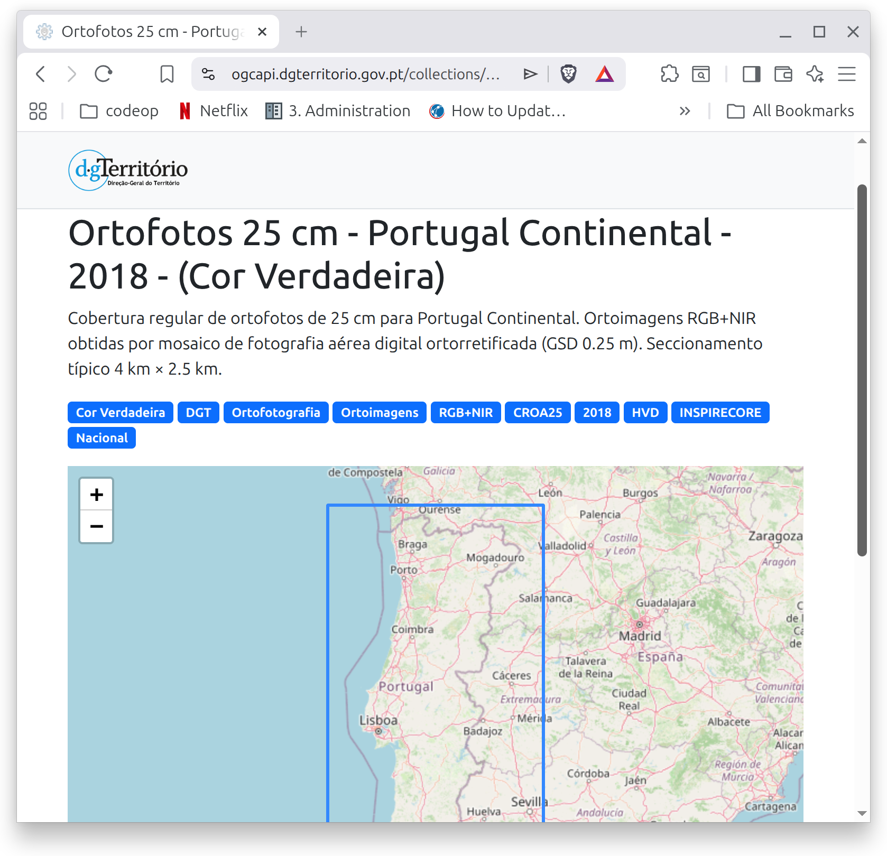
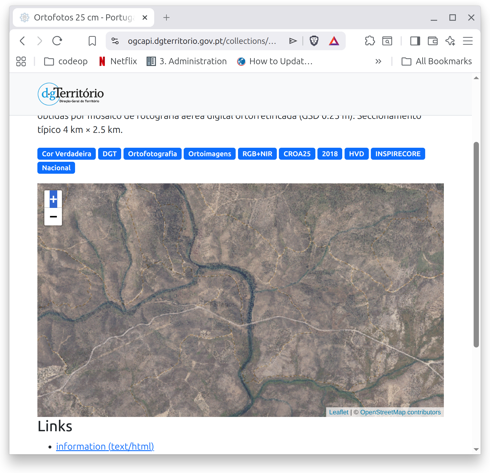
Info
OGC API - Maps não tem o conceito de zoom levels; no entanto, através dos parâmetros bbox, width e height, é possível calcular uma escala; esta escala pode depois ser traduzida num zoom level por um cliente de mapas, como o LeafLet.
Visualização de Coleções de Tiles
Question
Esta coleção do tipo OGC API - Tiles não parece apresentar dados. Porquê?
As tiles só são renderizadas quando existe informação. Pode dar-se o caso de que não existe informação para o zoom level especificado, ou para aquela bounding box específica. Se fôr esse o caso, experimente a aumentar o zoom ou a navegar até outra parte do mapa, usando o pan; nalguns casos, pode mesmo ser necessária uma combinação dos dois (zoom + pan).
Example
No exemplo abaixo, mostra-se o mapa interativo no endpoint da coleção "SRUP - Marcos Geodésicos". Na primeira imagem, o mapa é apresentado à escala de defeito, que mostra todo o país, e não são apresentados dados; na segunda imagem, foi feito zoom até ao nível 7 e já apresentados dados.
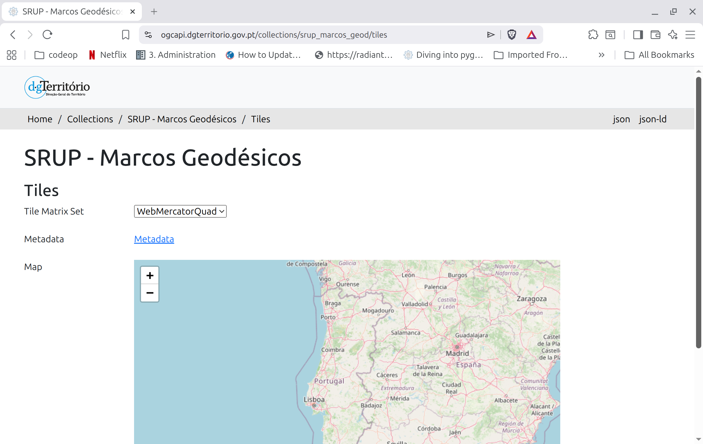
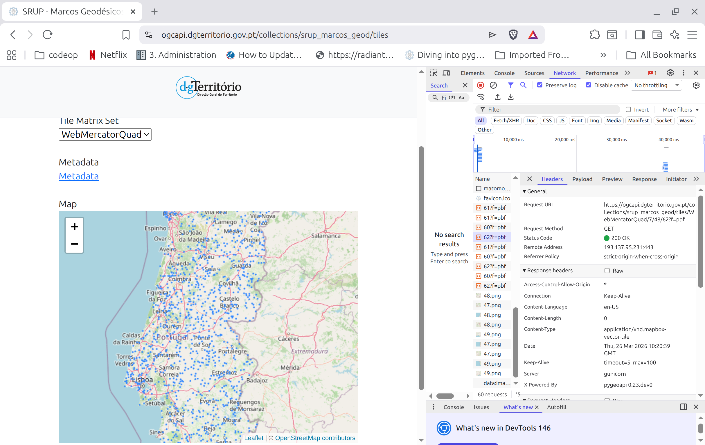
Já no caso da coleção "SRUP - Árvores de Interesse Público - Áreas", há informação apenas nalgumas partes pontuais do mapa. Por exemplo se fizermos zoom para a região do Luso, vamos encontrar uma área.
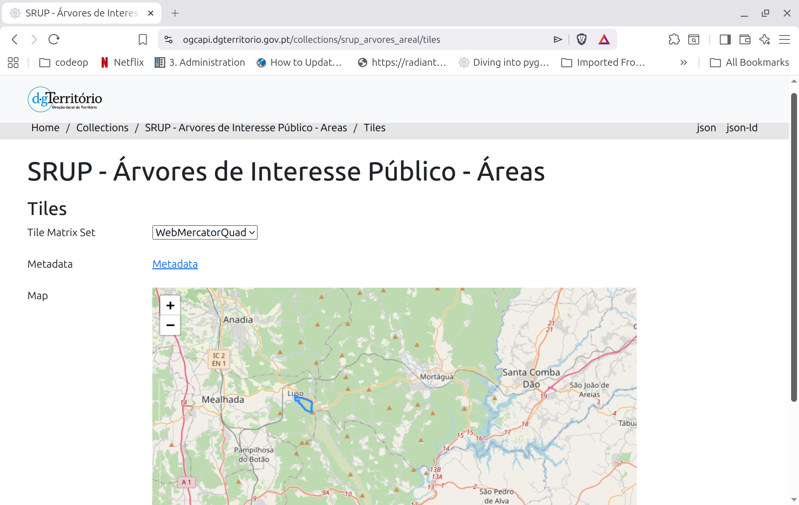
CRS da Coleção
Question
Qual é o CRS (Coordinate Reference System) da coleção?
O CRS é sempre apresentado na página da coleção. No caso de coleções do tipo OGC API - Features, são suportados múltiplos CRS (ver "CRS Suportados"). No caso de coleções do tipo OGC API - Tiles, o Tile Matrix Set (CRS usado para renderizar as tiles) é apresentado no endpoint de tiles (por exemplo: aqui); todas as tiles vetoriais são publicadas usando Web Mercator Quad (EPS:3857).
Tip
No caso de OGC API - Maps, o CRS é um parâmetro do pedido; no entanto, no caso de este ser omitido o servidor pode optar por enviar um CRS de defeito. No caso das coleções de mapas da DGT, são suportados WGS84 e WebMercator.